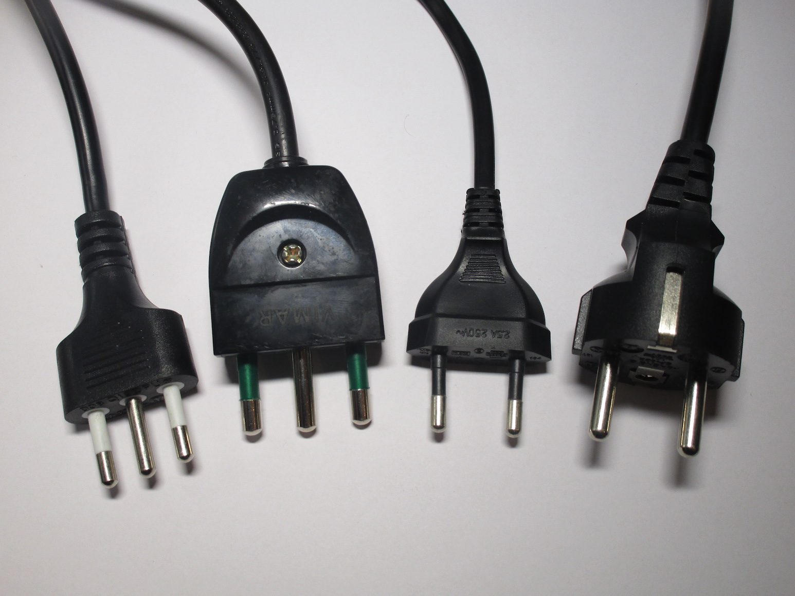

General information
Italian electrics are... weird.
If you've never visited this site before, this page is for you! It's a brief look at the wonderful world of just how weird Italian electrics are compared to most other countries.
After reading this, you can take a look at the other pages on my site, which talk about these things in more detail. I haven't covered all the topics I want to cover yet, so I'd recommend looking again at the site every once in a while, to see if there are any changes.
Types of plugs
Most countries in the world generally only have one type of plug in common use, and that makes sense: it creates less confusion and it's incredibly convenient for the end user. And yeah, if you go look at one of those "types of plugs used in the world" maps, you might see Italy listed as using "the type L plug". The thing is, that isn't completely correct.
Italy actually uses 4 types of plugs, the ones in this picture:
{kind=link}
The ones on the right are the original Italian plugs, the "type L" plugs - and as you can see, there are two of them.
As I talked about here, the reason for that is because they were used for different
voltages. This isn't the case anymore, but the two plug standards are still here.
Plus, there are also the two other plugs: the Europlug (which is compatible with all Italian sockets)
and the European Schuko plug (which isn't).
Generally, most houses just have sockets compatible with Italian plugs, and not Schuko plugs (although it's
common in newer houes to have sockets compatible with both).
Despite this, most appliances don't come with type L plugs, they come with European Schuko plugs, which are not
compatible with most sockets.
Generally the only devices you can buy that use Italian plugs are laptop chargers, or things like extension cords
and power strips.
Thankfully it seems like most of the power strips you can buy are compatible with Schuko plugs.
Because of this, you'll find multiple adaptors like these inside a normal Italian home:


These are Schuko to Italian adaptors - a completely common and boring item for anyone living here, but it's certainly a weird concept for people in other countries. Despite the fact that all of them are rated at a maximum of 1500W, they are often used to connect devices like hairdryers and washing machines, which consume much more than that. The alternative would be to have either the socket or the plug on the appliance replaced, so it's understandable why most people choose this route.
Additionally, there are incompatibilities even with Italian plugs: the bigger 16A plugs aren't compatible with 10A sockets, but a lot of power strips come with 16A plugs on them - meaning that you need to be careful about which socket you're plugging things into.
And if that wasn't weird enough, there were also the BTicino Magic plugs! In the 60s they tried to make people switch over to this new standard of plugs... which then failed. You can read more about this here.
Limited electrical supplies
Most Italian houses only have 3kW (14A) supplies. That is, once you go over 3kW (more or less, the power meter lets you
consume a bit more than that briefly) the power meter shuts off, and you have to go turn the main switch back on
again.
Suffice to say, 3kW isn't enough for... anything really, however most people manage to get by with these low
contracts. Bigger contracts are available, but they cost more, and even then the maximum you can get in single
phase is 10kW, if your supplier even lets you do that. You can go a bit higher with a three-phase supply, but
after 15kW you start getting charged for real power since at that point it's considered an industrial supply.
Presumably one of the reasons why we have these limited electrical supplies is that most houses here have a natural gas supply, for things like cooking, hot water and heating. So at that point 3kW is enough, if you only turn on one appliance at a time. Most Italians are familiar with the concept of having to turn the meter back on because you went over the limit.
Modularity


One thing used in Italy that doesn't seem to have caught on nearly as much in other countries is the use of modular
systems for light switches, power sockets, etc.
The system works by having a support plate that holds individual modules - those modules can be power sockets, light
switches, TV antenna connections, etc. Then you can clip the individual modules to the support plate, screw everything
to the wall box, and finally you can clip on a decorative cover plate which hides the screws and makes everything look
nice.